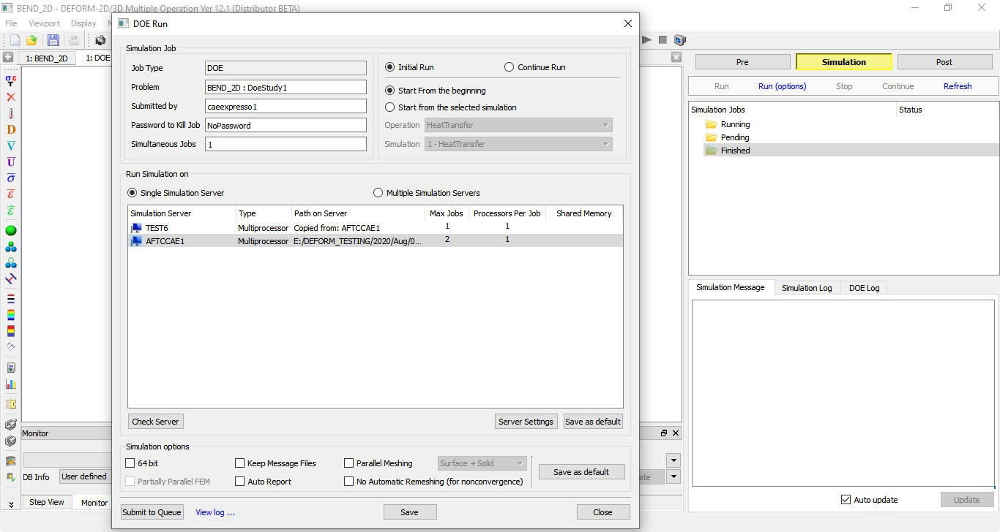
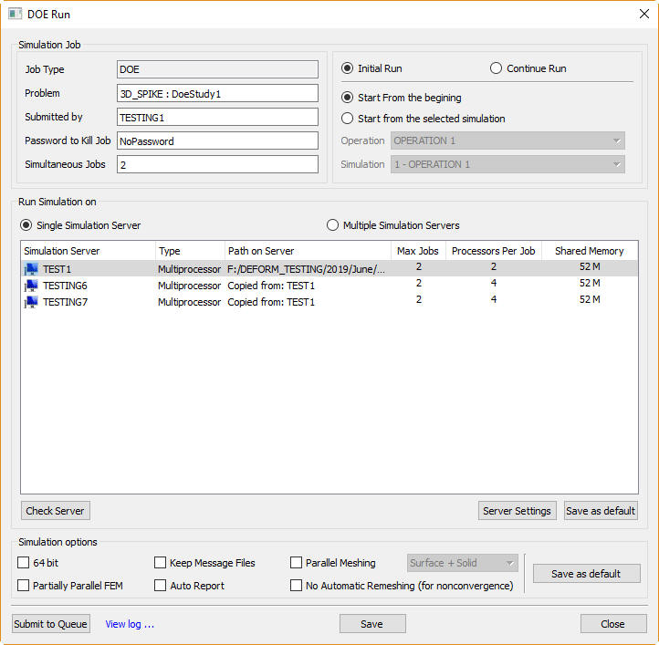
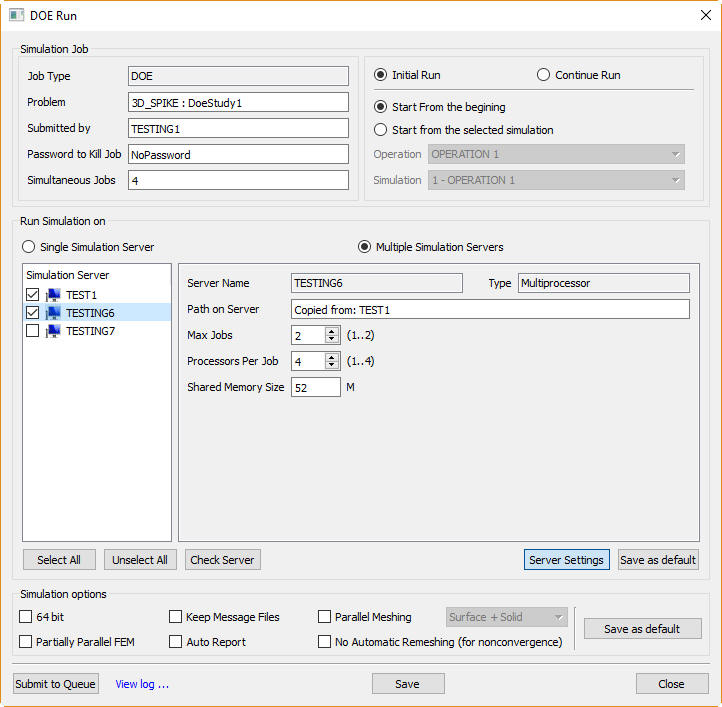
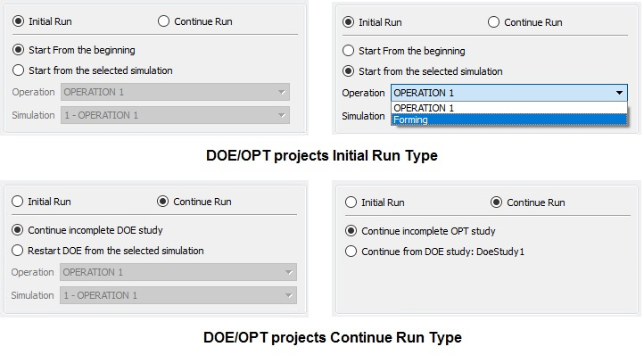
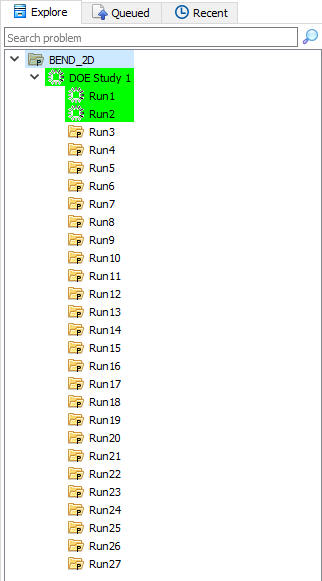
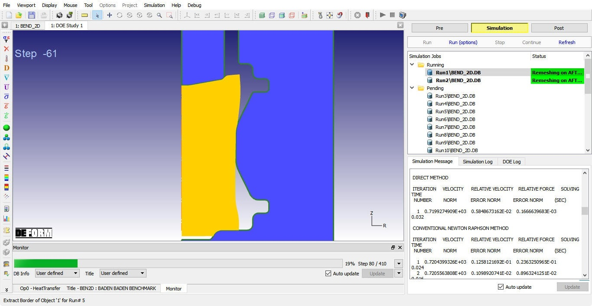
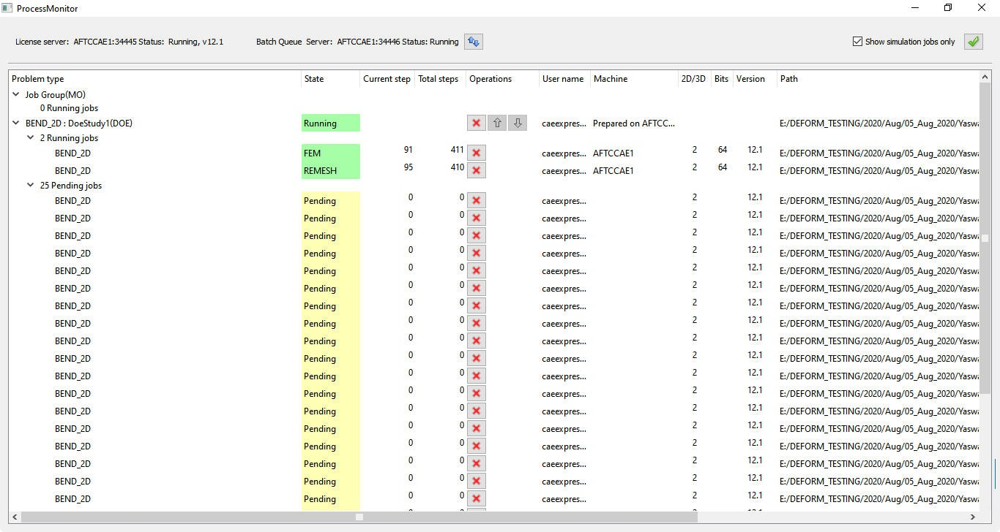

DOE jobs are submitted to run in batch mode using button,button, run options are as shown in Fig. 52.2.1. Simulations can be run either on "Single simulation server" or "Multiple simulation servers" using "Run Simulation on" options. For Single simulation server user needs to select any one available simulation server while for Multiple simulation servers user can select multiple no. of available simulation servers from the list in the table. Enter the number of Simultaneous jobs to be simulated (must be less than the simulation server Max jobs) and number of Processors to be utilized per job (for 3D only) based on the licenses available for running, then click on to run jobs in queue. To set selected simulation server Max jobs and Processors per job click on button.

DOE Run options window
Run Simulation on:
Single Simulation Server:
User can run multiple DB's or Run cases by submitting in queue in any one of the available simulation servers listed using single simulation server as shown in Fig. 52.2.2. User can select the number of simultaneous jobs to run up to available number of licenses based on the requirement.

Run options window for DOE job using single sim server
Multiple Simulation Servers:
From version 11.1 user can run the batch queue jobs using the remote machine simulation servers, using the simulation server other than the local will provide opportunity to use multiple simulation servers at a time to simulate the DOE/OPT multiple run cases or DB's. It reduces the load on the local sim servers and also by using the multiple machine sim servers we can reduce the time required to complete the DOE/OPT project.
To use a particular available simulation sever, user needs to check the checkbox next to that sim server from the list in the table. User can change the simulation severs settings like processors per job and MPI shared. In addition to this user can also set Max. Jobs per simulation server for DOE and OPT simulations. (See Fig. 52.2.3. )

Run options window for DOE job using multi sim server
For DOE and OPT simulations in both single and multi simulation server mode, selected simulation servers settings can be edited by selecting the particular simulation server and clicking on button.
For more details on "Run simulation on" run option refer Chapter 6.2.3. Section Run_Simulation_option.
Simulation Run types: For DOE/OPT projects user can start the simulation from the first operation or if DOE/OPT variables added only from the intermediate operations then user can continue only from those intermediate operations. Even if DOE/OPT simulation stops abnormally then user can restart the simulation from incomplete run where it stopped or from the intermediate operation of the incomplete run.
Initial Run: This initial run will provide two options those are,
Start from the beginning: This will start the simulation from the first operation starting step. User can also use this option to restart the simulation from the beginning in case of incomplete DOE run due to some license or network issues.
Start from the Selected Simulation: This will start the simulation from any of the intermediate operation's simulations by selecting that particular operation and its simulation. If user added DOE study only in the intermediate operation then using this option will reduce the total time required to complete DOE study.
Continue Run: This continue run will provide two options those are,
Continue incomplete DOE study: This will continue the incomplete DOE study runs simulations from the last available negative step and complete the DOE/OPT project.
Restart DOE from the selected Simulation: This will continue the incomplete DOE study run from any of the intermediate operation's simulations by selecting that particular operation and its simulation.
Continue does not need to run successfully simulated DOE run cases again to complete the incomplete DOE project.

Simulation Run types for DOE/OPT projects
During running, system generates database for all the DOE samples within folder Run with suffix of number increasing up to number of samples along with necessary supporting files under DoeStudies/DoeStudy1/Solutions Problem directory, then it starts simulation for each DB starting with Run1 in batch as shown in Fig. 52.2.5. DOEStudy1 directory is the directory which contains details used for that DOE Study.

DOE Problem directory structure
The Simulation jobs tab and DOE Log tabs can be used to monitor the DOE runs a shown in Fig. 52.2.6. Also Process monitor will give more details about the DOE jobs in queue as shown in Fig. 52.2.7.

DOE Simulation jobs status

Process Monitor for DOE batch jobs running
Running, Pending and Finished DOE jobs that are submitted in queue will be listed in Simulation jobs tab or Process monitor.
After all simulations are completed, DOE results will be prepared automatically by extracting the necessary data from run cases and will be saved as SDB file in DOEStudy1/Output directory. These DOE results can be post-processed using DOE post. User can select the MO mode button and then select the to access DOE post or can also access from DEFORM Main GUI Post Processor link .
Related Topics: